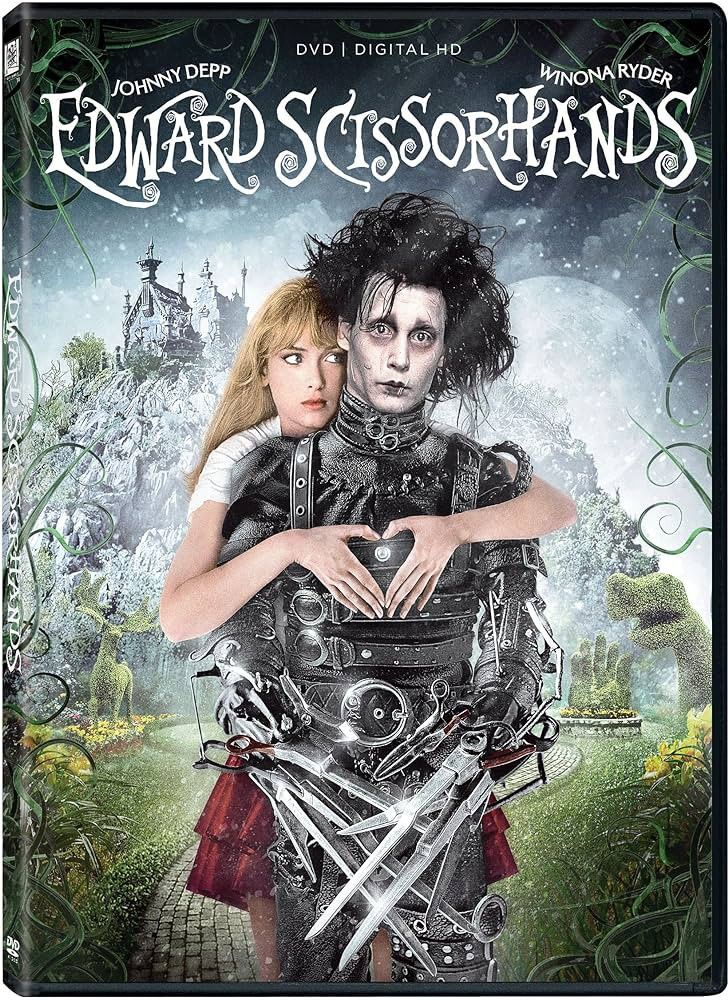
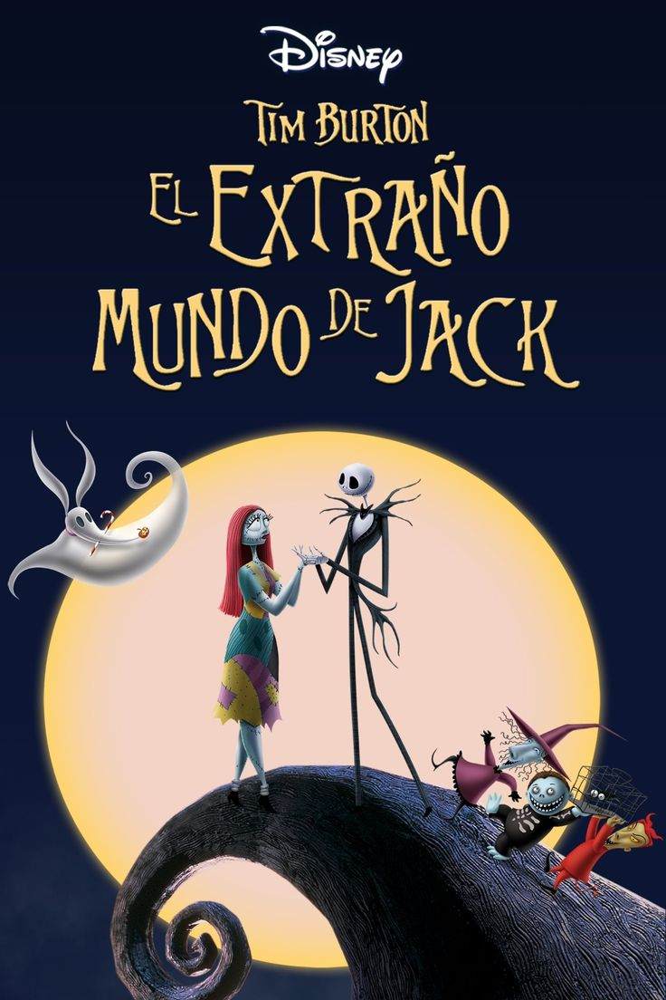
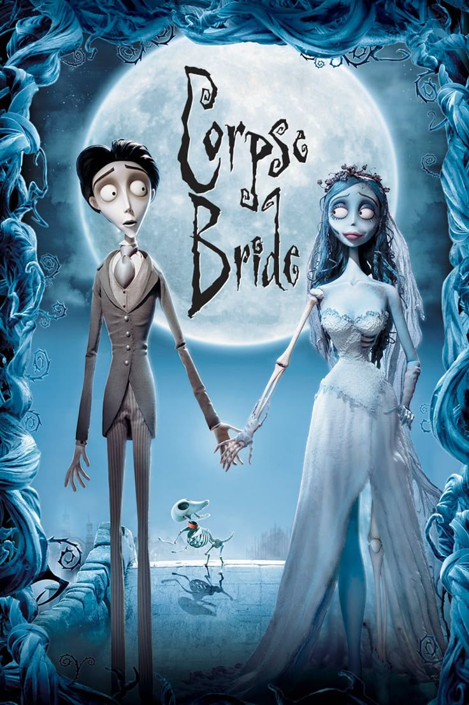
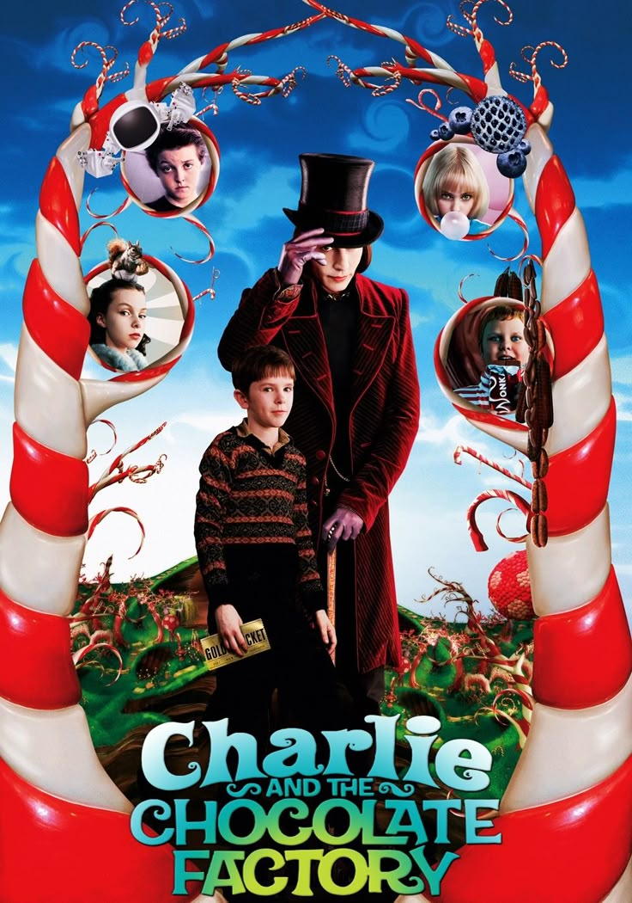
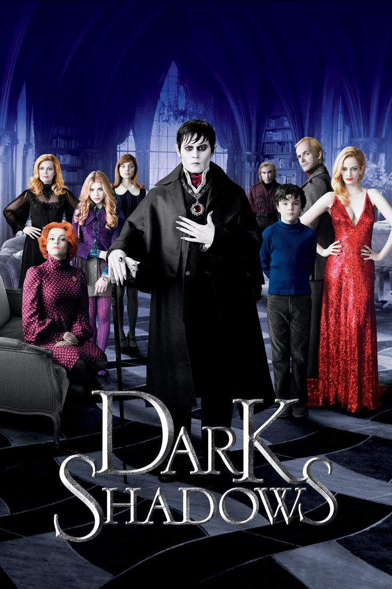

A continuación se muestran algunas peliculas mas reconocidas





Esta es la historia de un hombre "artificial", el cual no fue terminado debido a que su creador murio antes de poder terminarlo
Año de Estreno: 1990
Dato Cirioso: Esta fue la primera pelicula donde trabajaron juntos Tim Burton y Johny Depp
Jack Skellington es el rey de la ciudad de Halloween, descubre la navidad e intenta adaptarla a su propio estilo
Año de Estreno: 1993
Dato CuriosoSe tomaron 3 años en filmarla
Un joven nervioso ensaya sus votos matrimoniales en el bosque y accidentalmente se casa con una novia difunta que lo lleva al mundo de los muertos.
Año de Estreno: 2005
Dato Curioso: Fue la primera peliculaen stop-motion grabada completamente en cámaras fotograficasdigitales comerciales en lugar de cámaras de cine
El humilde nino Charlie Bucket gana un boleto dorado para visitar la misteriosa y magica fabrica de chocolates del extravagante Willy Wonka.
Año de Estreno: 2005
Dato Curioso :La compañia Nestlé proporciono 1850 barras de chocolatepara las escenas de la pelicula
Alicia regresa a un Submundo surrealista en ruinas para recuperar su valor, enfrentarse al temible Jabberwocky y liberar al Sombrerero Loco.
Año de Estreno: 2010
Dato Curioso: Para crear al Sombrerero Loco, Johny Depp y Tim Burton basaron su aspecto en la enfermedad real de los sombrereros del siglo XIX, causadopor el envenenamiento con mercurio
Tras pasar dos siglos sepultado por una maldición, el vampiro Barnabas Collins despierta en los coloridos años 70 para salvar a su excéntrica familia y enfrentar a su antigua despechada enemiga.
Año de Estreno: 2012
Dato Curioso: Esta peliculaes una adaptación de una famosa serie de televiciongótica de los años 60, de la cual Johny Depp era fanatico de niño